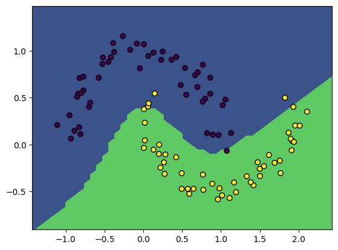

# Uncomment and run if using Colab!
#import urllib.request
#remote_url = 'https://gist.githubusercontent.com/gabehope/d3e6b10338a1ba78f53204fc7502eda5/raw/52631870b1475b5ef8d9701f1c676fa97bf7b300/hw5_support.py'
#with urllib.request.urlopen(remote_url) as remote, open('hw5_support.py', 'w') as local:
# [local.write(str(line, encoding='utf-8')) for line in remote]
# Run me first!
from hw5_support import *Homework 5: Automatic Differentiation
Overview
In this homework we will build a tiny reverse-mode automatic differentiation library!
Python features
This homework makes use of a few fancy features in Python that are worth knowing about if you are unfamiliar. - Variable length arguments (e.g. *args) - List comprehensions (e.g. [a**2 for a in range(5)]) - Magic methods (e.g. __add__)
Part 1: Forward-mode automatic differentiation
We’ll start by developing an automatic differentiation class that uses forward-mode automatic differentiation.
Recall that for this version of automatic differentiaion each operation needs to keep track of the derivative of it’s value with respect each original input. Since for every operation we need to store these extra pieces of data and functions for computing both the operation and its derivative, it makes sense to define a class to represent the result of an operation.
For example, if we want to make a class that represents the operation c=a+b our class needs several properties: - value: The value of the operation (c) - forward_grads: A dictionary that contains the derivatives with respect to each original input (e.g. (\(\frac{dc}{da}\) and \(\frac{dc}{db}\))). - func: A function that computes the operation (a+b) - grads: A function that computes the derivatives of the operation (\(\frac{dc}{da}\) and \(\frac{dc}{db}\))
For this homework, we’ve provided the outline of such a class, called ForwardValue. This will be the base class for all of our possible operations and represents declaring a variable with a value (a = 5). This is useful because it lets us define values that we might want to find derivatives with respect to.
Let’s see how this will work in practice. If we want to take derivatives we will first define the inputs using ForwardValue.
a = ForwardValue(5)
b = ForwardValue(2)Then we can perform whatever operations we want on these inputs:
c = a + b
L = log(c)Each of these operations will produce a new ForwardValue object representing the result of that operation.
As each result should maintain the derivatives with respect to each original inputs, we can access the final derivatives we’re interested (\(\frac{dL}{da}\) and \(\frac{dL}{db}\)) in from L.
dL_da = L.forward_grads[a]
dL_db = L.forward_grads[b]We’ll also be able to compute operations with non-AutogradValue numbers, but obviously won’t be able to compute derivaitives with respect to these values.
s = 4
L = s * a
dL_da = L.forward_grads[a] # Will work because a is an ForwardValue
dL_ds = L.forward_grads[s] # Will give an error because s is not an ForwardValueNow that we’ve seen what our final product will look like, let’s define our ForwardValue class.
class AutogradValue:
'''
Base class for automatic differentiation operations. Represents variable delcaration.
Subclasses will overwrite func and grads to define new operations.
Properties:
parents (list): A list of the inputs to the operation, may be AutogradValue or float
parent_values (list): A list of raw values of each input (as floats)
forward_grads (dict): A dictionary mapping inputs to gradients
grad (float): The derivative of the final loss with respect to this value (dL/da)
value (float): The value of the result of this operation
'''
def __init__(self, *args):
self.parents = list(args)
self.parent_values = [arg.value if isinstance(arg, AutogradValue) else arg for arg in args]
self.forward_grads = {}
self.value = self.forward_pass()
self.grad = 0. # Used later for reverse mode
def func(self, input):
'''
Compute the value of the operation given the inputs.
For declaring a variable, this is just the identity function (return the input).
Args:
input (float): The input to the operation
Returns:
value (float): The result of the operation
'''
return input
def grads(self, *args):
'''
Compute the derivative of the operation with respect to each input.
In the base case the derivative of the identity function is just 1. (da/da = 1).
Args:
input (float): The input to the operation
Returns:
grads (tuple): The derivative of the operation with respect to each input
Here there is only a single input, so we return a length-1 tuple.
'''
return (1,)
def forward_pass(self):
# Calls func to compute the value of this operation
return self.func(*self.parent_values)
def __repr__(self):
# Python magic function for string representation.
return str(self.value)
class ForwardValue(AutogradValue):
'''
Subclass for forward-mode automatic differentiation. Initialized the forward_grads
dict to include this value.
'''
def __init__(self, *args):
super().__init__(*args)
if len(self.forward_grads.keys()) == 0:
self.forward_grads = {self: 1}Note that in the base case, when we declare a variable the derivative with respect to itself is just 1 (\(\frac{da}{da}=1\))
da_da = a.forward_grads[a] # Will be 1Now that we’ve defined the framework for an operation that can be used in automatic differentiation, we need to define some actual useful operations by subclassing ForwardValue
Q1: Defining operations
Fill out the func and grads methods of each subclass below. Recall that func should always return the result of the operation and grads should always return a tuple of the derivative with respect to each input.
Hint: Look at the _add and _neg examples as a template!
Answer
class _add(AutogradValue):
def func(self, a, b):
return a + b
def grads(self, a, b):
return 1., 1.
class _sub(AutogradValue):
def func(self, a, b):
return a - b
def grads(self, a, b):
return 1., -1.
class _neg(AutogradValue):
def func(self, a):
return -a
def grads(self, a):
return (-1.,)
class _mul(AutogradValue):
def func(self, a, b):
return a * b
def grads(self, a, b):
return b, a
class _div(AutogradValue):
def func(self, a, b):
return a / b
def grads(self, a, b):
return 1 / b, -a / (b * b)
class _exp(AutogradValue):
def func(self, a):
return math.exp(a)
def grads(self, a):
return (math.exp(a),)
class _log(AutogradValue):
def func(self, a):
return math.log(a)
def grads(self, a):
return (1 / a,)Below, we’ll define our basic functions and operators in terms of the operator classes we just wrote.
def exp(a):
return _exp(a) if isinstance(a, AutogradValue) else math.exp(a)
def log(a):
return _log(a) if isinstance(a, AutogradValue) else math.log(a)
# Note: Remember that above we defined a class for each type of operation
# so in this code we are overriding the basic operators for AutogradValue
# such that they construct a new object of the class corresponding to the
# given operation and return it.
# (You don't need to everything that's happening here to do the HW)
AutogradValue.exp = lambda a: _exp(a)
AutogradValue.log = lambda a: _log(a)
AutogradValue.__add__ = lambda a, b: _add(a, b)
AutogradValue.__radd__ = lambda a, b: _add(b, a)
AutogradValue.__sub__ = lambda a, b: _sub(a, b)
AutogradValue.__rsub__ = lambda a, b: _sub(b, a)
AutogradValue.__neg__ = lambda a: _neg(a)
AutogradValue.__mul__ = lambda a, b: _mul(a, b)
AutogradValue.__rmul__ = lambda a, b: _mul(b, a)
AutogradValue.__truediv__ = lambda a, b: _div(a, b)
AutogradValue.__rtruediv__ = lambda a, b: _div(b, a)We should now be able to use our ForwardValue objects as if they are numbers!
a = ForwardValue(5)
b = ForwardValue(2)
print((a + 5) * b)
print(log(b))
test_operators(ForwardValue)20
0.6931471805599453
Passed!We see now that our forward_pass method needs to update forward_grads (e.g. to compute \(\frac{dg}{da}\) and \(\frac{dg}{db}\)) using the forward_grads values of its parents (e.g. \(\frac{dc}{da}\) and \(\frac{dc}{db}\))
Q2: Defining forward-mode autodiff
Update the forward_pass method below for forward-mode automatic differentiation. This method should update the forward_grads property of the operation such that: - forward_grads has an entry for every input that appears in forward_grads of any parent operation. - If an input appears in more than 1 parent, make sure to add the gradients appropritately (if g has parents b and c then \(\frac{dg}{da} = \frac{dg}{db}\frac{db}{da} + \frac{dg}{dc}\frac{dc}{da}\) ) - Parents that are not AutogradValue objects are ignored
If our forward_pass method is working correctly, we should have the following behaivior:
# Define our inputs as ForwardValue objects
a = ForwardValue(5)
b = ForwardValue(2)
# Perform operations
c = a * b
g = 3 * c + a
# We should have the following in the forward_grads property of c and d (note that the keys are ForwardValue objects!)
c.forward_grads = {a: 2, b: 5} # dc/da and dc/db
g.forward_grads = {a: 3 * 2 + 1, b: 3 * 5} # dg/da = dg/dc dc/da + dg/da, dg/db = dg/dc dc/dbImplement the method below
def forward_pass(self):
self.forward_grads = {}
grads = self.grads(*self.parent_values)
# Again iterate through pairs of parent, local derivative
for node, grad in zip(self.parents, grads):
# Check if the parent has a forward_grads property
if hasattr(node, 'forward_grads'):
# Iterate through all inputs in the parents forward_grad dict.
# Add it to our forward_grads if we haven't yet and update it
for key, value in node.forward_grads.items():
if key not in self.forward_grads:
self.forward_grads[key] = 0
self.forward_grads[key] += value * grad
# Make sure to still return the operation's value
return self.func(*self.parent_values)
# Overwrite the AutogradValue method so that operators still work
AutogradValue.forward_pass = forward_pass
test_forward_mode(ForwardValue)Passed!We can now take derivates of functions!
a = ForwardValue(5)
b = ForwardValue(2)
L = -log(5 *b + a)
dL_da = L.forward_grads[a]
dL_db = L.forward_grads[b]
print('dL/da = %.3f, dL/db = %.3f' % (dL_da, dL_db))dL/da = -0.067, dL/db = -0.333We could also implement our own very simple version of Autograd’s grad.
def grad(f):
def ad_function(x, *args):
x = ForwardValue(x)
output = f(x, *args)
return output.forward_grads[x]
return ad_function
# Define a function
def f(x):
return x * x
# Use 'grad' to compute the derivative function
f_prime = grad(f)
# Verify that we get the correct answer
x = 5.
print('x:\t', x)
print('f(x):\t', f(x))
print("f'(x):\t", f_prime(x))x: 5.0
f(x): 25.0
f'(x): 10.0Part 2: Reverse-mode automatic differentiation
We’ll start by developing an automatic differentiation class that uses reverse-mode automatic differentiation, as this is what will be most useful for neural networks.
Recall that for reverse-mode AD to work, everytime we perform an operation on one or more numbers we need to store the result of that operation as well as the parent values (the inputs to the operation). We also need to be able to compute the derivative of that operation. Since for every operation we need to store several pieces of data and several functions, just like forward-mode automactic differentiation, it makes sense to define a class to represent the result of an operation.
In this case, we’ll reuse the AutogradValue class we defined above as the the base class. The set of properties will be the same, except that instead of keeping track of a forward_grads dictionary, we’ll keep track of a new grad property. - grad: The derivative of the final loss with respect to c (\(\frac{dL}{dc}\))
Remember that this will be the base class for all of our possible operations and represents declaring a variable with a value (a = 5).
Let’s see how this will work in practice. If we want to take derivatives using reverse-mode, we will first define the inputs using AutogradValue.
a = AutogradValue(5)
b = AutogradValue(2)As before, we can perform whatever operations we want on these inputs:
c = a + b
L = log(c)Each of these operations will produce a new AutogradValue object representing the result of that operation.
Finally we can run the backward pass by running a method backward() (that we will write) on the outout L. This will compute the gradients of L with respect to each input that we defined (\(\frac{dL}{da}\) and \(\frac{dL}{db}\)). Rather than returning these derivatives, the backward() method will update the grad property of a and b, making it easy to access the correct derivative.
L.backward()
dL_da = a.gradAgain, we’ll be able to compute operations with non-AutogradValue numbers, but won’t be able to compute derivaitives with respect to these values.
s = 4
L = s * a
dL_da = a.grad # Will work because a is an AutogradValue
dL_ds = s.grad # Will give an error because s is not an AutogradValueNow that we’ve seen what our final produce will look like, let’s define our AutogradValue class.
Let’s confirm that we do keep the entire compuational graph for operations defined in this way.
Q3: Computational graph
Write a function graph_print that takes a single argument. If the argument is an AutogradValue (or one of its subclasses), print its value property and then call graph_print on each of its parents. If the argument is not an AutogradValue, just print it. The format of printing is not important.
Hint: You can use the built-in Python function isinstance to determine if something is an AutogradValue or one of its subclasses. e.g. isinstance(a, AutogradValue)
def graph_print(a):
# Check if we're an AutogradValue
if isinstance(a, AutogradValue):
# Recursively call on each parent
for p in a.parents:
graph_print(p)
print(a.value)
else:
print(a)
a = AutogradValue(5.)
b = AutogradValue(2.)
c = log((a + 5) * b)
graph_print(c)5.0
5.0
5
10.0
2.0
2.0
20.0
2.995732273553991The function should print (it’s ok if the numbers or order aren’t exact):
2.995732273553991
20.0
10.0
5.0
5.0
5
2.0
2.0Now in order to do automatic differentiation, we need to define how to do the backward pass. We’ll start with the backward_step for a single operation.
Q4: Backward pass
Fill in the method backward_pass which computes a single step of the reverse pass through the computational graph (assume self is an AutogradValue instance). If backward_pass is called on a value c, the method should: - Assume that self.grad contains the derivaive of the final loss with respect to c (\(\frac{dL}{dc}\)). - Check if each parent of c is an AutogradValue. If it is, update that parent’s grad property to account for c (e.g. for parent a, update the value of \(\frac{dL}{da}\))
For example: if c represents the result of an addition so c = a + b, calling backward_pass on c will update the grad property of both a and b. (a.grad represents \(\frac{dL}{da}\) and is initialized to 0).
Hint: grads will be one of the methods we wrote in the last homework (and shown above). Recall that if c has parents a and b then grads method will give \(\frac{dc}{da}\) and \(\frac{dc}{db}\).
def backward_pass(self):
local_grads = self.grads(*self.parent_values)
# Loop through pairs of parents and their corresponding grads
for node, grad in zip(self.parents, local_grads):
# Update the gradient of each AutogradValue parent
if isinstance(node, AutogradValue):
node.grad += self.grad * grad
AutogradValue.backward_pass = backward_pass
# Test our implementation
test_backward_pass(AutogradValue)Passed!Finally we need to define the backward method itself. We will call this on the loss value to find the derivatives of the loss with respect to each input. This means working our way backward through the sequence of operations. Remember that if c=a+b, then if c.grad is \(\frac{dL}{dc}\), calling backward_pass on c will update \(\frac{dL}{da}\) (a.grad) and \(\frac{dL}{db}\) (b.grad).
The complication is that c may be used in multiple operations, so we can’t call backward_pass on c until we’ve called backward_pass on each child operation of c otherwise c.grad won’t have the correct value of \(\frac{dL}{dc}\), as in this example:
c = a + b
g = c * 2
h = c + 4
L = g * h
L.backward_pass() # Updates dL/dg and dL/dh
h.backward_pass() # Updates dL/dc
##WRONG ORDER
c.backward_pass() # Incorrect because dL/dc hasn't accounted for dL/dg
g.backward_pass()
## CORRECT ORDER
g.backward_pass() # Updates dL/dc
c.backward_pass() # Updates dL/da and dL/dbQ5: Backward method
Fill in the backward method for AutogradValue. Your backward method should call backward_pass on each operation used to compute the loss (self is the loss value). Some important things to keep in mind: - backward_pass should only be called once on each operation - backward_pass must be called on every child of an operation before it can be called on the operation. - You should not try to call backward_pass on values that aren’t instances of AutogradValue, even though they might be stored in operation.parents
Hint: We discussed a simple approach to this problem in class! In general the problem we’re solving here is a topological sort. We won’t score efficiency in grading, but it still might be worth optimizing this function a bit.
Simple, but slow implementation
def backward(self):
# We call backward on the loss, so dL/dL = 1
self.grad = 1.
# Setup a queue of nodes to visit, starting with self (the final loss)
queue = [self]
# Setup a list keep track of the order to call backward_pass()
order = []
# Visit each AutogradValue in the queue
while len(queue) > 0:
node = queue.pop()
if isinstance(node, AutogradValue):
# We only want to keep the last instance of each node in the
# order, so if we visit a node already in the order, remove it
if node in order:
order.remove(node)
# Add the node to the end of the order and its paraent to the queue
order.append(node)
queue.extend(node.parents)
# Once we have the order call backward pass on every node
for node in order:
node.backward_pass()
AutogradValue.backward = backward
# Test our implementation
test_backward(AutogradValue)Passed!Faster implementation by keeping track of visit counts
def backward(self):
# We call backward on the loss, so dL/dL = 1
self.grad = 1.
queue = [self]
order = []
# Additionally keep track of the visit counts for each node
counts = {}
while len(queue) > 0:
node = queue.pop()
# Rather than removing nodes from the order [slow, O(N)],
# just mark that it has been visited again [O(1)]
if isinstance(node, AutogradValue):
if node in counts:
counts[node] += 1
else:
counts[node] = 1
order.append(node)
queue.extend(node.parents)
# Go through the order, but only call backward pass once we're at
# the last vist for a given node
for node in order:
counts[node] -= 1
if counts[node] == 0:
node.backward_pass()
AutogradValue.backward = backward
# Test our implementation
test_backward(AutogradValue)Passed!Now we can use our AutogradValue class to compute derivatives!
a = AutogradValue(5)
b = AutogradValue(2)
L = -log(5 *b + a)
L.backward()
print(a.grad, b.grad)-0.06666666666666667 -0.3333333333333333If we want to train a neural network using our automatic differentiation implementation, we’re going to want to be able to use numpy to do matrix operations. Fortunately, the our AutogradValue class is (mostly) compatible with numpy!
We can create arrays of AutogradValue and take derivatives as shown below:
a = np.asarray([AutogradValue(5), AutogradValue(2)])
L = np.dot(a, a)
L.backward()
print('Gradient for a', a[0].grad, a[1].grad)Gradient for a 10.0 4.0It would be a bit tedious to define every AutogradValue array in this way, so let’s write some convinience functions to make doing automatic differentiation with numpy easier.
Q6: Array support
Complete the following two functions wrap_array and unwrap_gradient.
wrap_array should take a numpy array of floats and return a new array where every element has been made into an AutogradValue.
unwrap_gradient should take a numpy array of AutogradValue and return a new array of floats, where every element is the extracted grad property of the corresponding element from the original array.
Both of these functions should work on 2-D arrays (matrices) at a minimum (but more general solutions that support 1 and/or >2 dimensional arrays are also possible).
Hint: You can create an array from nested lists as np.asarray([[1, 2], [3, 4]]).
We’ll start by creating a function that applys a function to each element of an array
def element_map(f, a):
'''
Creates a new array the same shape as a, with a function f applied to each element.
Args:
a (function): The function to apply
a (array): The array to map
Returns:
g (array): An array g, such that g[i,j] = f(a[i,j])
'''
# Store the original shape
shape = a.shape
# Create a 1-d array with the same elements using flatten()
# then iterate through applying f to each element
flat_wrapped = np.asarray([f(ai) for ai in a.flatten()])
# Reshape back to the original shape
return flat_wrapped.reshape(shape)We can use our element_map function to implement both wrapping and unwrapping
def wrap_array(a):
'''
Wraps the elements of an array with AutogradValue
Args:
a (array of float): The array to wrap
Returns:
g (array of AutogradValue): An array g, such that g[i,j] = AutogradValue(a[i,j])
'''
return element_map(AutogradValue, a)
def unwrap_gradient(a):
'''
Unwraps the gradient of an array with AutogradValues
Args:
a (array of AutogradValue): The array to unwrap
Returns:
g (array of float): An array g, such that g[i,j] = a[i,j].grad
'''
return element_map(lambda ai: ai.grad, a)
test_wrap_unwrap(wrap_array, unwrap_gradient, AutogradValue)Passed!Part 2: Training a neural network
Now we’re ready to test out our AutogradValue implementation in the context it’s designed for: neural networks! Below is a (slightly modified) version of the neural network class we wrote for the last homework.
def pad(a):
# Pads an array with a column of 1s (for bias term)
return a.pad() if isinstance(a, AutogradValue) else np.pad(a, ((0, 0), (0, 1)), constant_values=1., mode='constant')
def matmul(a, b):
# Multiplys two matrices
return _matmul(a, b) if isinstance(a, AutogradValue) else np.matmul(a, b)
def sigmoid(x):
# Computes the sigmoid function
return 1. / (1. + (-x).exp()) if isinstance(x, AutogradValue) else 1. / (1. + np.exp(-x))
class NeuralNetwork:
def __init__(self, dims, hidden_sizes=[]):
# Create a list of all layer dimensions (including input and output)
sizes = [dims] + hidden_sizes + [1]
# Create each layer weight matrix (including bias dimension)
self.weights = [np.random.normal(scale=1., size=(i + 1, o))
for (i, o) in zip(sizes[:-1], sizes[1:])]
def prediction_function(self, X, w):
'''
Get the result of our base function for prediction (i.e. x^t w)
Args:
X (array): An N x d matrix of observations.
w (list of arrays): A list of weight matrices
Returns:
pred (array): An N x 1 matrix of f(X).
'''
# Iterate through the weights of each layer and apply the linear function and activation
for wi in w[:-1]:
X = pad(X) # Only if we're using bias
X = sigmoid(matmul(X, wi))
# For the output layer, we don't apply the activation
X = pad(X)
return matmul(X, w[-1])
def predict(self, X):
'''
Predict labels given a set of inputs.
Args:
X (array): An N x d matrix of observations.
Returns:
pred (array): An N x 1 column vector of predictions in {0, 1}
'''
return (self.prediction_function(X, self.weights) > 0)
def predict_probability(self, X):
'''
Predict the probability of each class given a set of inputs
Args:
X (array): An N x d matrix of observations.
Returns:
probs (array): An N x 1 column vector of predicted class probabilities
'''
return sigmoid(self.prediction_function(X, self.weights))
def accuracy(self, X, y):
'''
Compute the accuracy of the model's predictions on a dataset
Args:
X (array): An N x d matrix of observations.
y (array): A length N vector of labels.
Returns:
acc (float): The accuracy of the classifier
'''
y = y.reshape((-1, 1))
return (self.predict(X) == y).mean()
def nll(self, X, y, w=None):
'''
Compute the negative log-likelihood loss.
Args:
X (array): An N x d matrix of observations.
y (array): A length N vector of labels.
w (array, optional): A (d+1) x 1 matrix of weights.
Returns:
nll (float): The NLL loss
'''
if w is None:
w = self.weights
y = y.reshape((-1, 1))
xw = self.prediction_function(X, w)
py = sigmoid((2 * y - 1) * xw)
return -(np.log(py)).sum()Q7: Autograd for a neural network
Implement an nll_and_grad method for the NeuralNetwork class using your reverse-mode automatic differentiation implmentation to compute the gradient with respect to each weight matrix.
def nll_and_grad(self, X, y):
'''
Get the negative log-likelihood loss and its gradient
Args:
X (array): An N x d matrix of observations.
y (array): A length N vector of labels
Returns:
nll (float): The negative log-likelihood
grads (list of arrays): A list of the gradient of the nll with respect
to each value in self.weights.
'''
# Wrap the array we want to differentiate with respect to (weights)
w = [wrap_array(wi) for wi in self.weights]
# Run the NLL function and call backward to populate the gradients
nll = self.nll(X, y, w)
nll.backward()
# Get both the nll value and graident
return nll.value, [unwrap_gradient(wi) for wi in w]
NeuralNetwork.nll_and_grad = nll_and_gradWe now have everything in place to train a neural network from scratch! Let’s try it on our tiny dataset. Feel free to change the inputs.
Hint: If this give very poor results and/or runs very slowly, make sure to carefully check the shape of each operation in your code to make sure it matches your expectation.
X, y = make_moons(100, noise=0.1)
model = NeuralNetwork(2, [10, 10])
gradient_descent(model, X, y, lr=3e-2, steps=250)
print('Model accuracy: %.3f' % model.accuracy(X, y))
plot_boundary(model, X, y)Loss 11.25, accuracy: 0.95: 100%|██████████| 250/250 [00:40<00:00, 6.24it/s]Model accuracy: 0.950